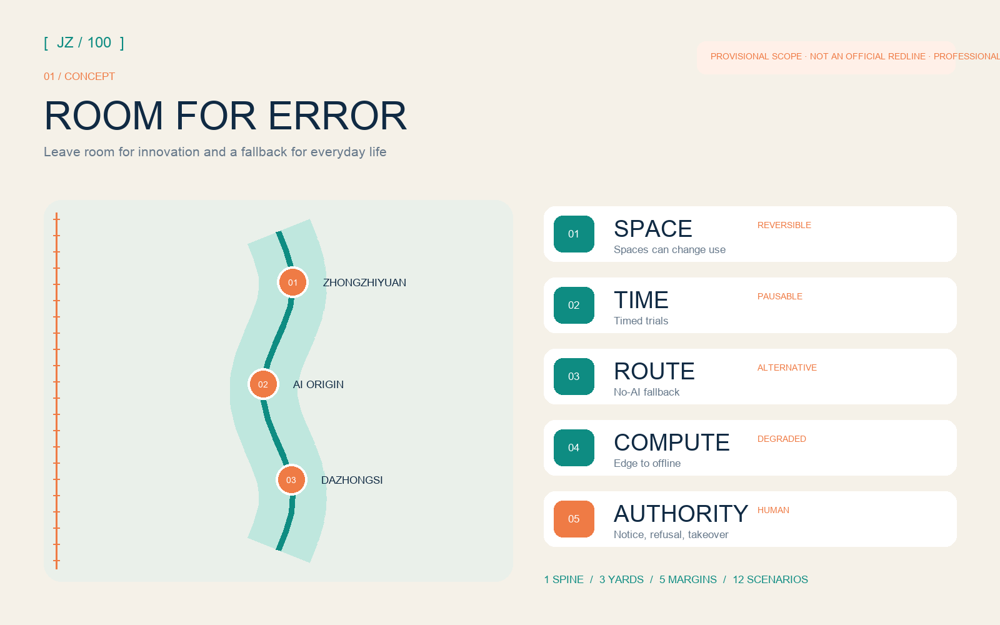
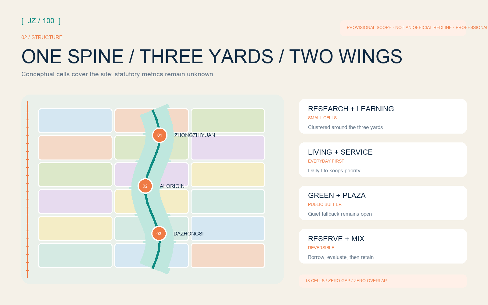
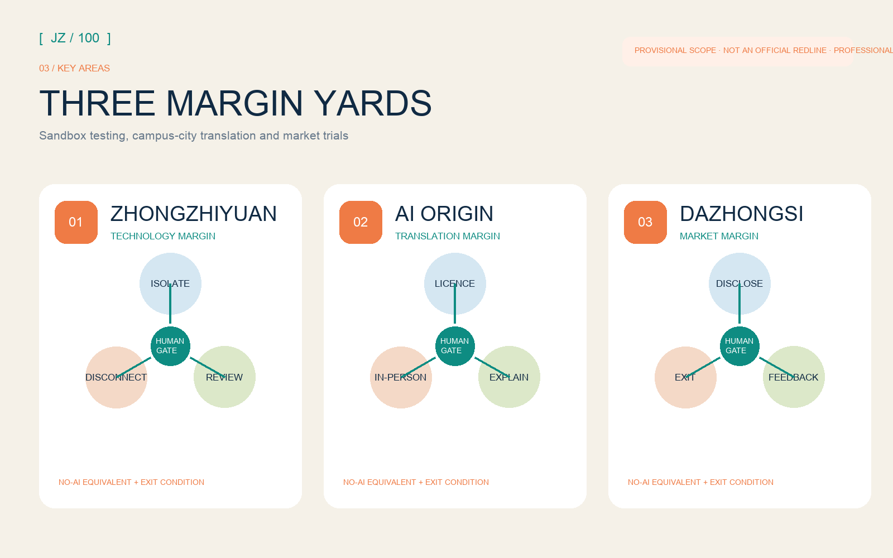
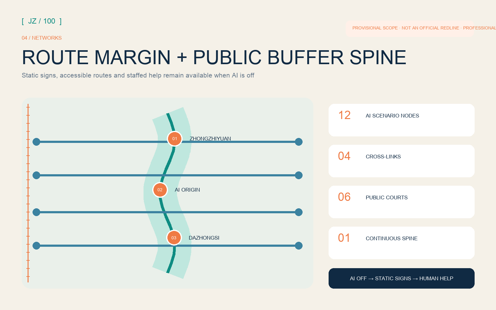
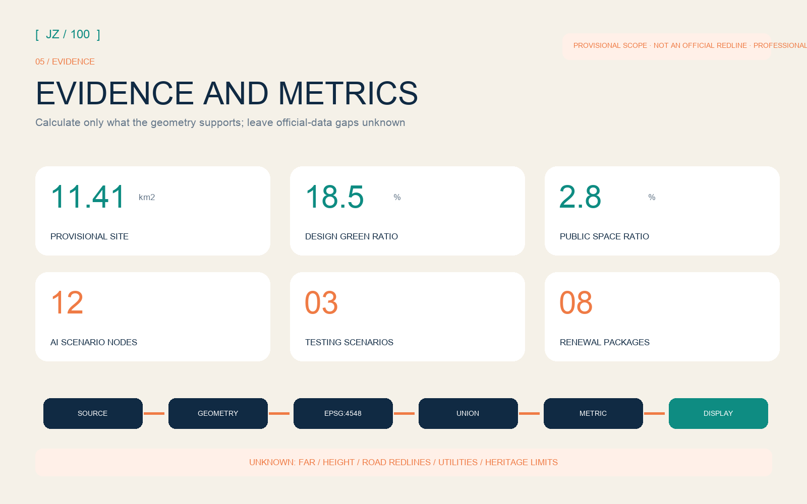

11.41 km²site_area_sqm
18.5%green_ratio
2.8%public_space_ratio
12AI scenarios
6personas
8renewal packages
01
Overview map · five urban margins

02
Three-level scope · land-use structure

03
Key areas · buildings and renewal projects

04
Slow mobility · blue-green public space · AI scenarios

05
Core metrics · task coverage · self-check

Sources
Sources: official notice, repository site package and source registry; precedents transfer mechanisms only.
Sources: official notice, repository site package and source registry; precedents transfer mechanisms only.
Assumptions
Assumption: overall and key-area polygons are provisional, not official redlines; recalculate the full package when official polygons arrive.
Assumption: overall and key-area polygons are provisional, not official redlines; recalculate the full package when official polygons arrive.